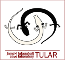
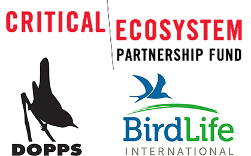

Monitoring razširjenosti človeške ribice
Spremljanje razširjenosti človeške ribice z vzorčenjem okoljske DNK. Projekt so v letih 2013–2014 sofinancirali Critical Ecosystem Partnership Fund, BirdLife International in DOPPS.


Jamski laboratorij Tular je s partnerji razvil raziskovalno metodo, ki pomaga premagati glavno oviro pri ugotavljanju razširjenosti človeške ribice: nedostopnost njenega podzemeljskega habitata. Z učinkovito in neinvazivno metodo v filtriranih vzorcih vode iz izvirov in jam zaznavamo sledi njene okoljske DNK. V povezavi z analizo GIS smo preverjali prisotnost človeške ribice na potencialnih novih najdiščih, tudi tam, kjer je doslej še niso opazili, ter preverili izbrane stare podatke o razširjenosti. Rezultati so omogočili celovitejši pregled razširjenosti na raziskovanem območju in prepoznavanje njegovih najbolj ranljivih delov.
Končno poročilo o izvedbi projekta (PDF, 3,89 MB).
Raziščite biotsko raznovrstnost Sredozemlja na interaktivnem zemljevidu StoryMap.
Izvirni zapisi o projektih in laboratoriju. Datumi in zgodovinsko izrazje so ohranjeni.